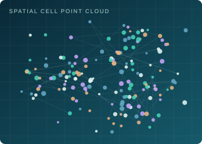

SPATIAL OMICS · CANCER RESEARCH
Topological Learning for Spatial Omics and Cancer Research
My current research focuses on developing topological and graph-based learning methods to investigate the spatial organization of cells within complex biological tissues, particularly in cancer. I am interested in how cellular heterogeneity, spatial interactions, and higher-order structural patterns within the tumor microenvironment relate to cancer development and progression.
At MD Anderson Cancer Center, I am developing a reusable topological toolbox for spatial omics analysis that integrates point-cloud representations, cell-neighborhood graphs, biologically informed filtrations, persistent homology, topology-derived descriptors, and statistical analysis. Applied to high-dimensional spatial proteomics data from lung adenocarcinoma, this work aims to characterize cellular connectivity, tissue architecture, and spatial relationships across disease stages. The broader goal is to develop interpretable, robust, and reproducible approaches for identifying biologically meaningful patterns in complex cancer datasets.
